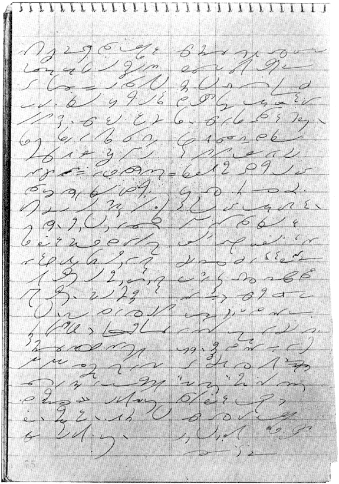

From
a Reporter's Notebook
A page of notes taken by Charles E. Zoubek in a
Negligence Case

Transcript
…you would have to
find from the evidence that the little boy was free from contributory
negligence on his part and, as I said to you at the beginning—that
would depend what a child of his age and experience would do under
the circumstances. Now was there an opportunity for the boy
to have avoided the danger; had this truck made its turn so far
down there that the reasonable careful and prudent child of that
age should have seen it, and under those circumstances would he
have been able to avoid the accident?
If, gentlemen, the neglect here was
solely that of the defendant company, through the operation of its
truck by its driver, then the plaintiffs would be entitled to recovery;
and, if not, of course, the plaintiffs would not be entitled to
recovery. So there you have the issues, gentlemen. You will
take the case and do justice between the parties.
(Jury rises to retire)
Just a minute! If you get to
the question of damages, don't draw any inference, because the Court
neglected to state the rules as to damages, that I have in mind
there should be no recovery here. I have no such opinion.
It is for you, gentlemen, to say whether or not there should be
a recovery. Now if you get to the question of damages in the
case of Mr. Arrego, he would be entitled to such sum as you gentlemen
in your good judgment say he was entitled to by reason of the loss
of the boy. Now, the boy at that time was 7 years of age and,
on the proofs in the case, a jury may fix a value on the loss of
those services. During the time that the child was rendered
incapable of rendering service to the father, you may say the services
were worth something, or, under the proofs in this case, you may
say that they were worth nothing.
Now if, on looking the situation over,
they were worth something, then you could recompense the father
to a reasonable extent. If you say they were worth nothing,
then your verdict in the father's case would be "No cause of
action," even though you had come to the conclusion that the
defendant here was liable.
Now in the case of the little boy,
there, gentlemen, you would be entitled to give him such sum….
December, 1944
|